在這個 Codelab 中，將會介紹如何用 Incorta Notebook 做 histogram（直方圖）
在這我們將會用的是 PySpark 語言
Step 1
Schema → +New → Materialized View
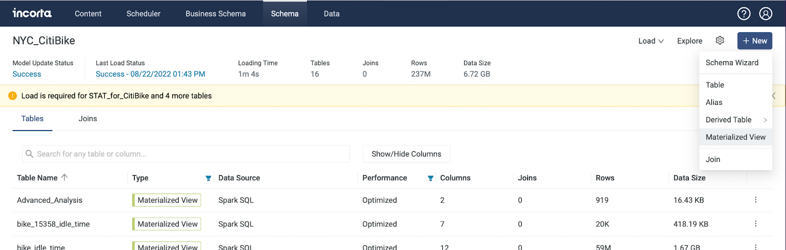
Step 2
在語言的地方選擇 Spark Python
→ Edit in Notebook

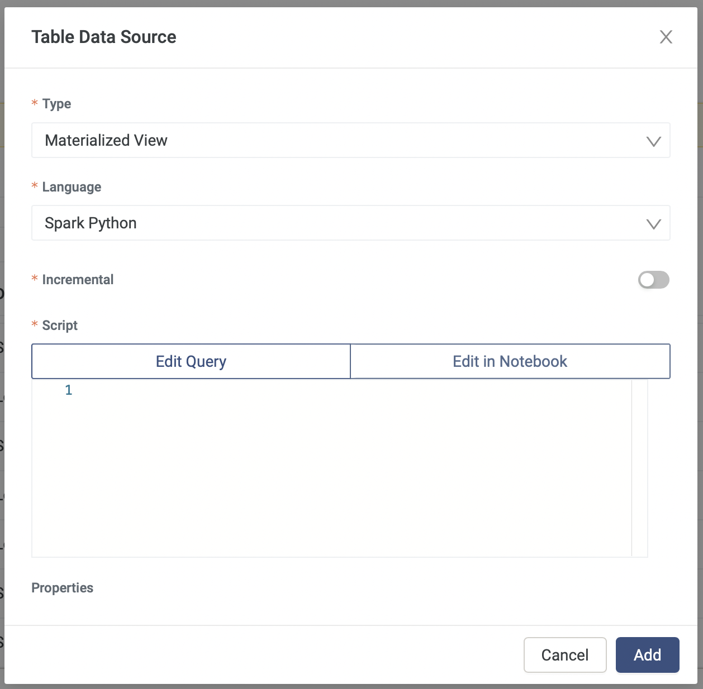
read("Schema.Table")
讀取 schema 中的 table
Example
%pyspark
df = read("NYC_CitiBike.DATE_HANDLING")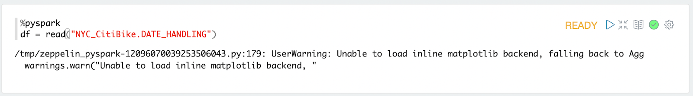
df.filter("篩選條件")
篩選 data 將 tripduration 是 null 的資料剔除，只保留有數值的資料
Example
%pyspark
df_duration = df.filter("tripduration is not null").select("tripduration")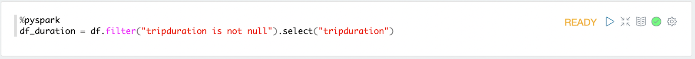
incorta.show(df)
Example
%pyspark
incorta.show(df_duration)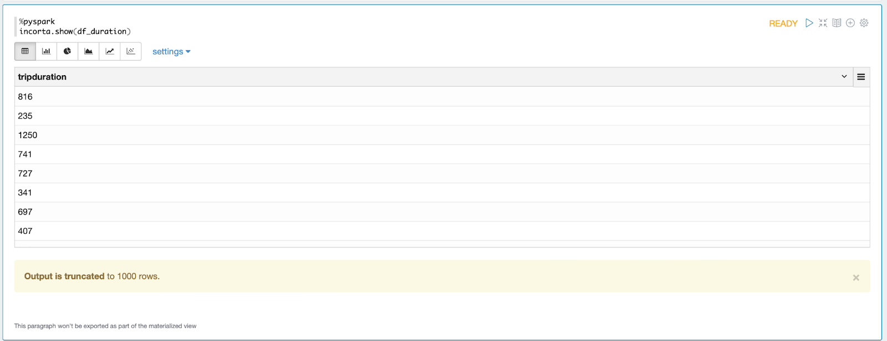
df.rdd.histogram
利用 rdd.histogram 製作直方圖，找到 value range 和 range count
[int(round(start+x*step)) for x in range(n)]這個 code 可以用 python 產生出一個列表區間，不需要一個一個自己用手打
Example - for 迴圈
從 0 開始，公差為 60，總共 60 個
x = [int(round(0+x*60)) for x in range(60)]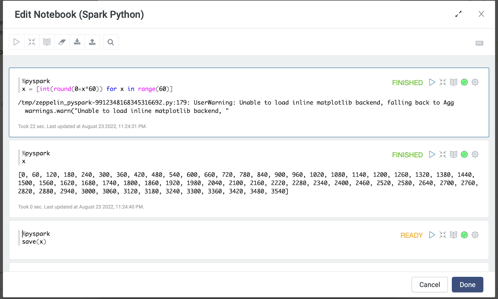
Example - 一個一個手打
y = [0, 60, 120, 180, 240, 300, 360, 420, 480, 540, 600, 660, 720, 780, 840, 900, 960, 1020, 1080, 1140, 1200, 1260, 1320, 1380, 1440, 1500, 1560, 1620, 1680, 1740, 1800, 1860, 1920, 1980, 2040, 2100, 2160, 2220, 2280, 2340, 2400, 2460, 2520, 2580, 2640, 2700, 2760, 2820, 2880, 2940, 3000, 3060, 3120, 3180, 3240, 3300, 3360, 3420, 3480, 3540]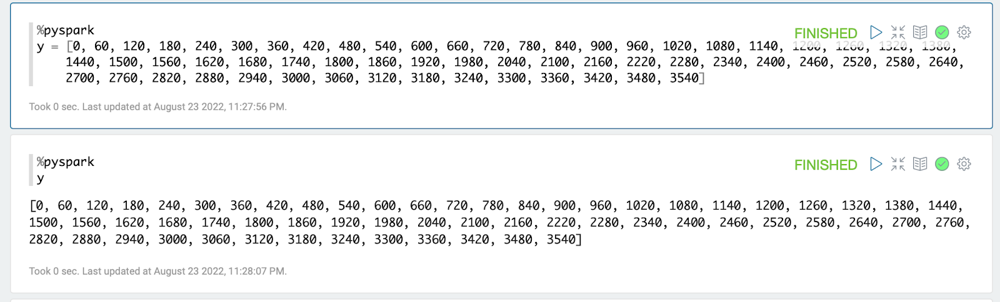
Example
利用上方的 code 應用在 histogram 中，製作 histogram 級距為60秒，也就是1分鐘，並且最大值設為一星期的時間（60*60*24*7）
若是要看 df.rdd 更多的使用方法，可以用 help(df_duration.rdd) 查看
%pyspark
value_range, range_count = df_duration.rdd.map(lambda x: x[0]).histogram([int(round(0+x*60)) for x in range(60*24*7)])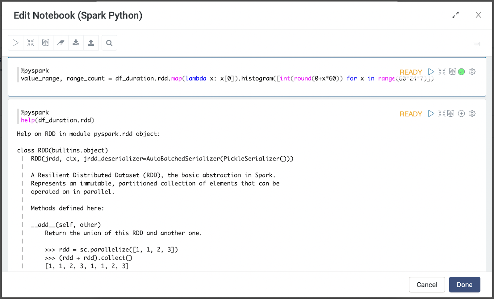
Reference
python generate list interval：
https://www.codegrepper.com/code-examples/python/python+generate+list+interval
Example - 若是不用 list interval
這個例子和前一個例子最大的不同就是，histogram給的條件不一樣，前一個是給急遽為60秒，共一個星期10080個bar；而這一個例子只有給條件需要100個bar讓系統去切，但因為原本資料右偏的非常嚴重，導致切出來的數值，並不符合視覺直觀判斷（如下圖），因此才需要上面那個方法做histogram的級距
df = read("NYC_CitiBike.DATE_HANDLING")
df_duration = df.filter("tripduration is not null").select("tripduration")
value_range, range_count = df_duration.rdd.map(lambda x: x[0]).histogram(100)
len(value_range), len(range_count)
value_range[:-1]
df_output = spark.createDataFrame(zip(value_range[:-1],range_count), schema=['bin', 'count'])
incorta.show(df_output)
save(df_output)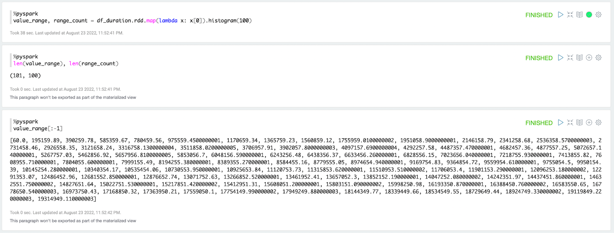
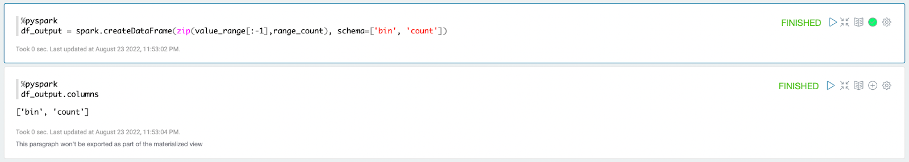
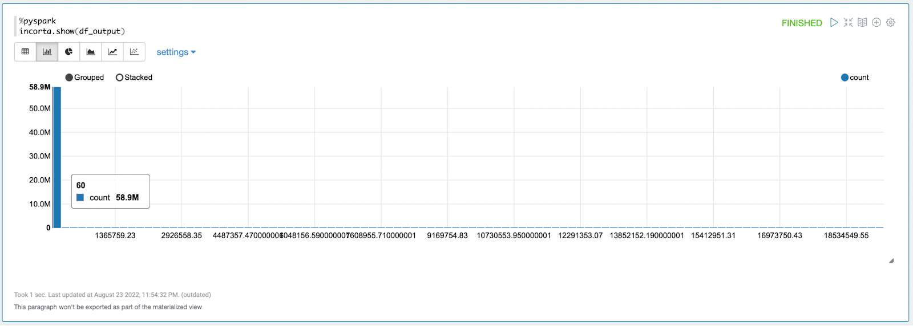
len()
list[start:end]
利用 len() 函數分別查看 value_range 和 range_count 的長度，確認直方圖會有多少個區間，再利用 value_range[:-1] 查看每個區間的起始值為何
Example
%pyspark
len(value_range), len(range_count)Example
%pyspark
value_range[:-1]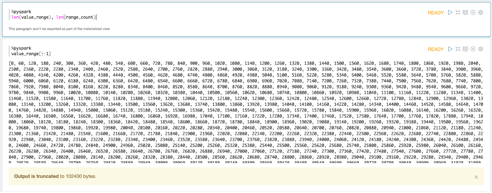
spark.createDataFrame()
建立一個新的 Data Frame，命名為 df_output 為最後需要儲存的 data frame
先是利用 value_range[:-1] 和 range_count 分別做成 column 為 'bin' 和 'count'，這是為了之後要製成 histogram 的必要步驟
接下來因為大部分的 trip duration 資料都在一小時之內，因此我給他一個篩選條件，讓 bin 要小於等於 3600，最後得出我們想要的圖形
Example
%pyspark
df_output = spark.createDataFrame(zip(value_range[:-1],range_count), schema=['bin', 'count'])Example
%pyspark
df_output.columnsExample
%pyspark
df_output = df_output.filter("bin <= 3600")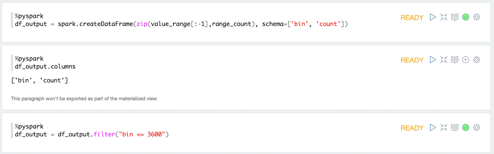
比較有無filter
在此我們可以比較一下，沒有加篩選條件和有加上篩選條件的結果分別會是長什麼樣子
沒有加篩選條件
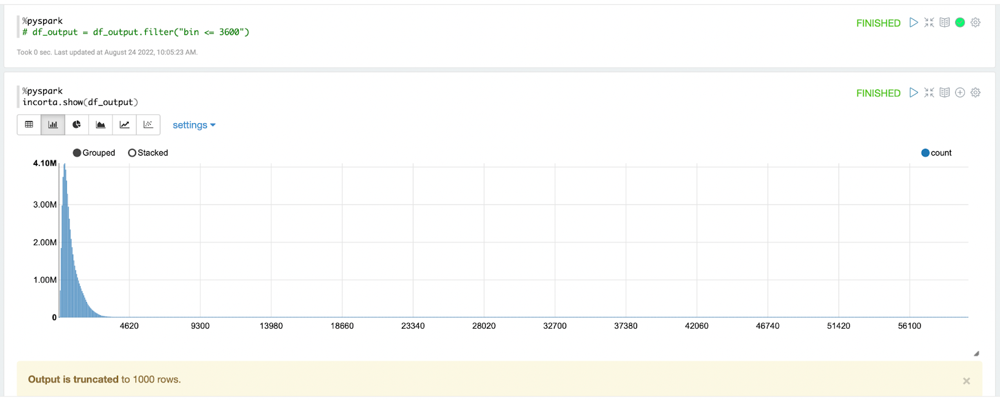
有加上篩選條件 filter("bin <= 3600")
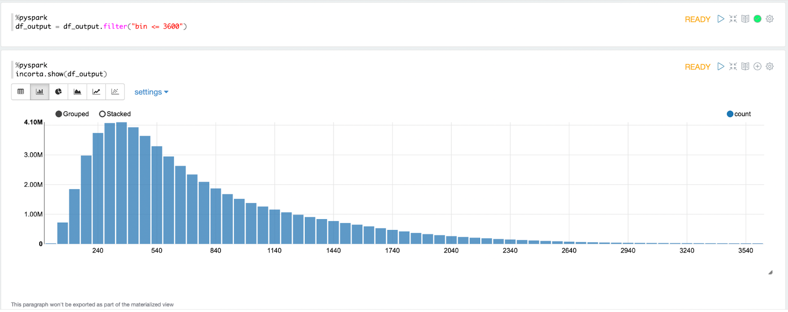
因為我們想看的是大多數的資料分佈，由此看來，我們需要加上篩選條件，將視覺集中於圖形左半邊，才能更看清楚大部分資料的分佈情形，因此最終決定使用加上篩選的結果
incorta.show(df)
在 Incorta Notebook 中，可以利用 incorta.show(df) 查看 data frame 的結果，也可以利用選單中的選項畫圖，以圖型的方式呈現出來，下面我們就是用 histogram 將資料呈現出來
Example
%pyspark
incorta.show(df_output)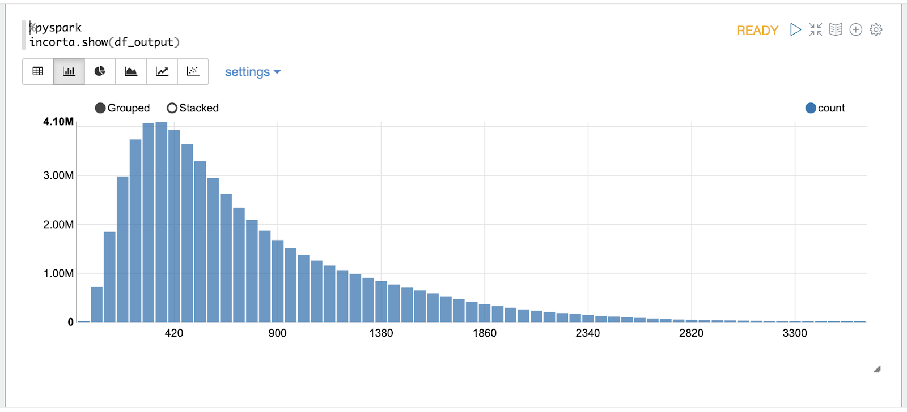
save(df)
最後一個步驟，看似不起眼，卻是最重要的一個步驟，就是儲存
利用 save 儲存 data frame，並且儲存成 MV，之後也可以利用 Incorta Dashboard 查看
Example
%pyspark
save(df_output)記得要檢查需要儲存的 paragraph 要將綠色勾勾打勾✅ ，再點選 Done → Validate → Done → Save Changes → Load Table
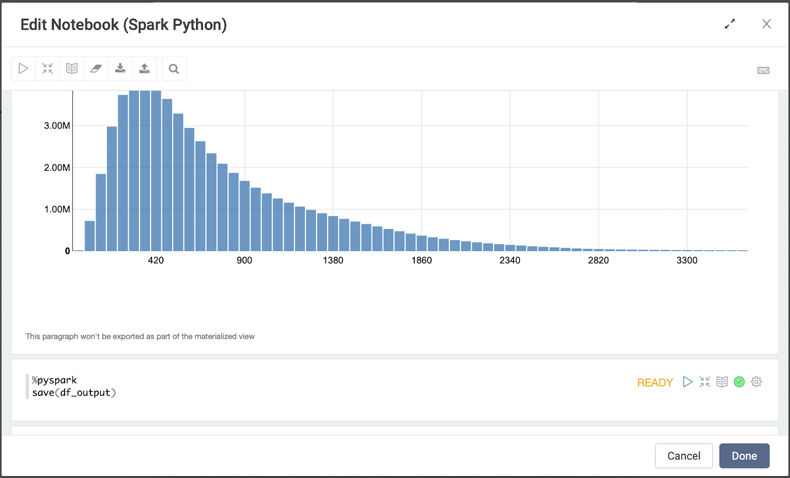
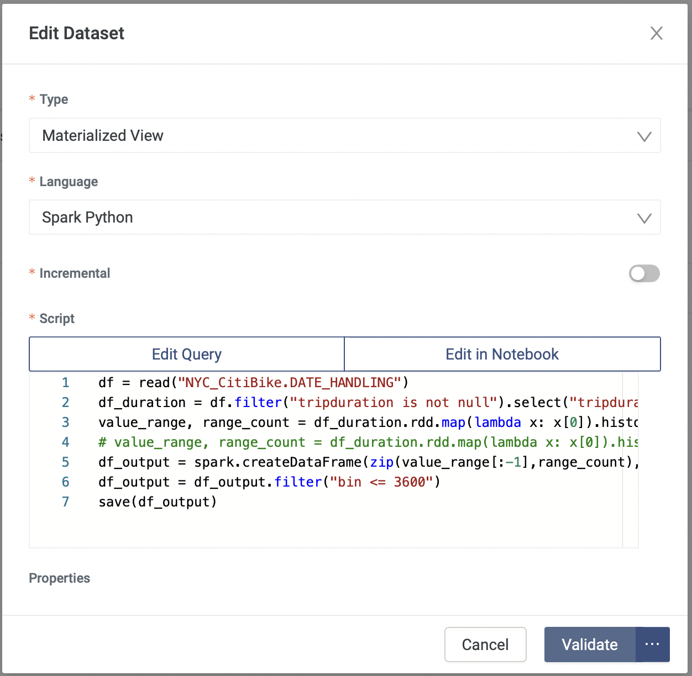
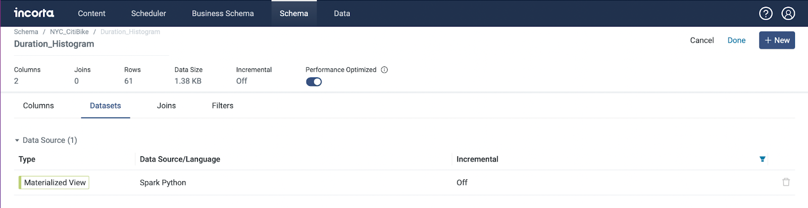
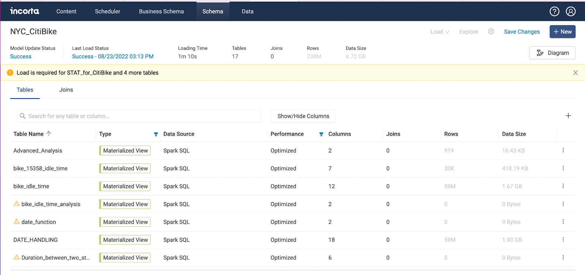

除了在 incorta notebook 可以畫圖外，也可以利用 Incorta Dashboard 畫圖
Step 1 建立一個新的 dashboard
Content → +New → Add Dashboard
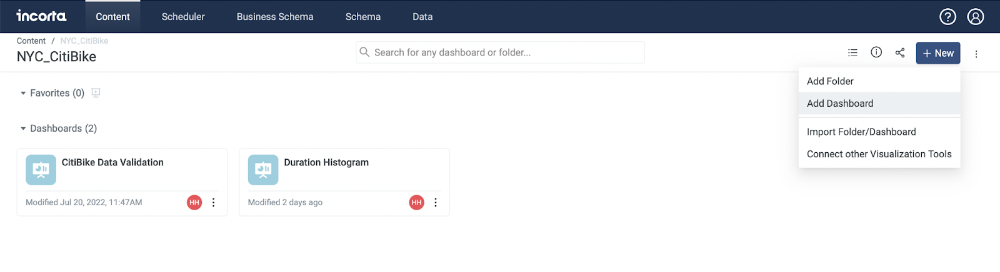
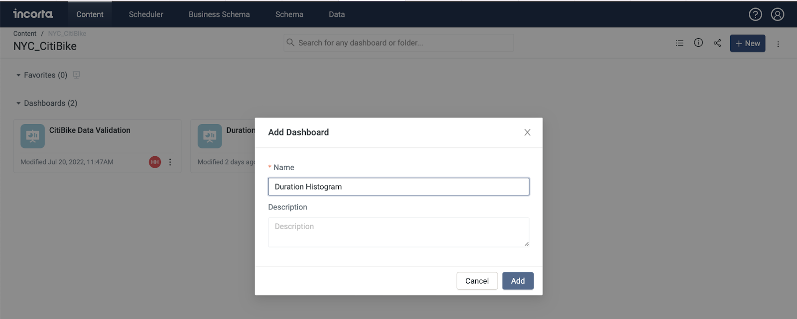
Step 2 建立 Insight
Add Insight → Column → Manage Dataset → Table → NYC_CitiBike → Duration_Histogram → x
點進 Insight 後，將圖形改選成 Column，下一步要選取剛剛所建立的 MV 作為 dataset ，點選 Manage Dataset → Table → NYC_CitiBike（Schema） → Duration_Histogram (MV)，關閉 Manage Dataset
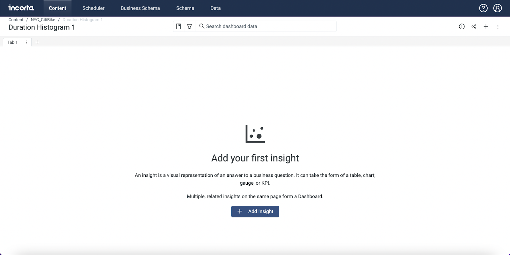
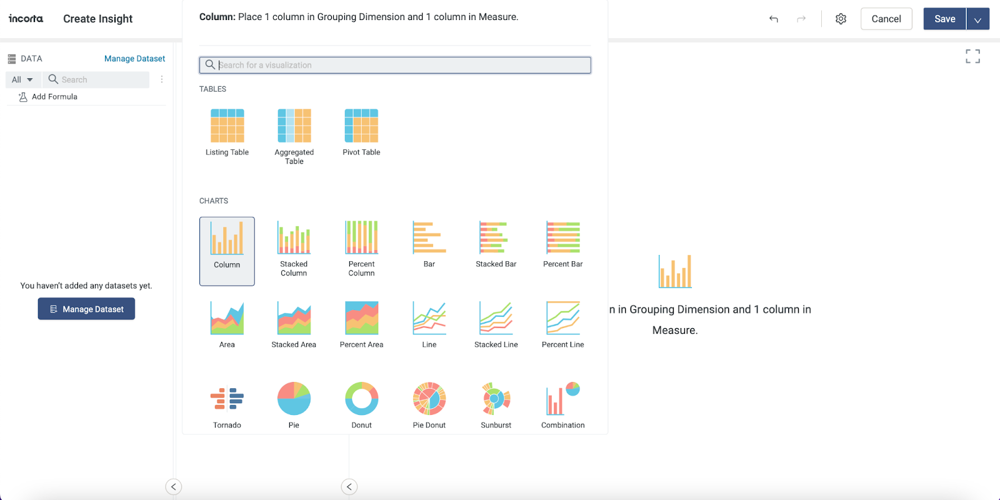
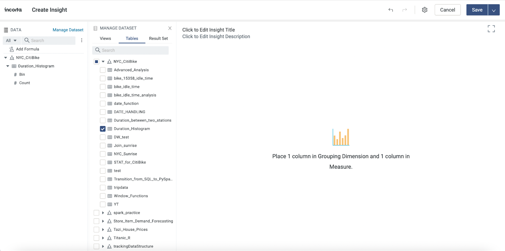
Step 3 將資料放入圖表
將 Bin 拖入 GROUPING DIMENSION，Count 拖入 MEASURE，並點選圖形上方的 Click to Edit Insight Title 將圖表命名，最後點選右上角的 Save，即完成在 Incorta Dashboard 畫圖
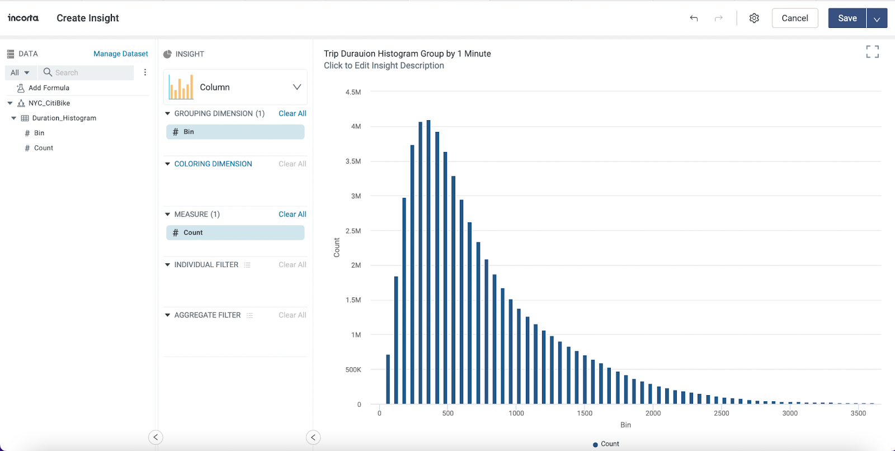
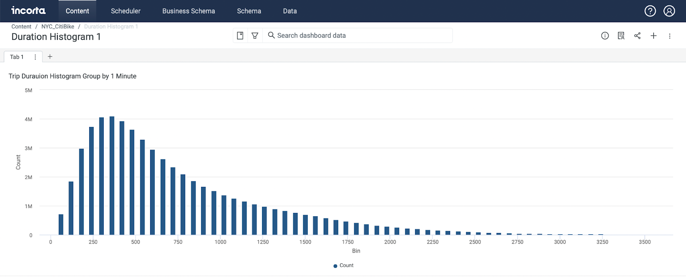
可以看到圖形結果和先前用 Incorta Notebook 畫出來的一樣，都是呈現右偏的圖形，因為圖形嚴重右偏的關係，我們之後想要分析 trip duration 時，可以利用中位數取代平均數，來看看不同站點之間的關係～